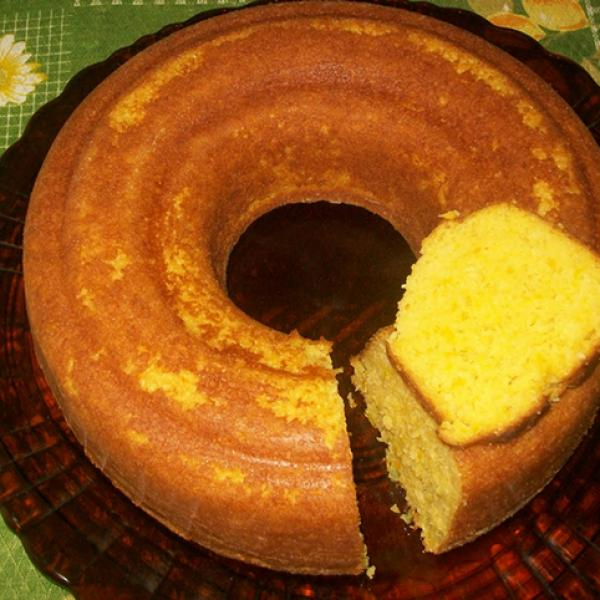

Jampa's Recipes!


Broa de Fubá
Description:
"Broa" is a corn flour ("fubá") cake, typical from the Brazillian state of Minas Gerais. Really tasty and texture rich, makes for a great match with butter and a cup of coffee.
Ingredients:
- 3 whole eggs;
- 1/2 cup olive oil;
- 1 cup sugar;
- 2 cups corn flour (fubá);
- 1 table spoon baking powder;
- a pinch of salt;
- grilled cheese, grated coconut or anise to taste
Steps:
- Preheat oven at 180 °C (355 °F);
- Grease and flour a large cake pan;
- Blend all liquid ingedients;
- Slowly add flour and blend as well;
- Add the cheese, the coconut and/or the anise and blend;
- Add baking powder and blend some more;
- Pour the batter into the cake pan;
- Bake for 30 to 40 minutes.